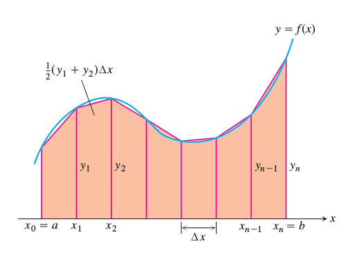

$F(x)$ fonksiyonunu bazen sembolik olarak entegre etmek zor olabilir. Bu durumlarda sayısal çözüm daha kullanışlı olabilir. Mesela $F(x)$'in $x_0$ ve $x_1$ arasındaki entegrali aslında bir alan hesabıdır, ve bu alanı, $x$ aralığını ufak parçalara bölerek, ve bu parçaları kullanarak yaklaşık bir alan hesabı yapıp sonuçları toplayarak elde edebiliriz.
$x_0$ ve $x_1$ arasını $N$ parçaya bölelim.
Artık entegrali yaklaşık olarak
$$ \int_{x_0}^{x_1} F(x) \mathrm{d} x \approx \sum_{i=1}^{N} F(x_i) $$
hesaplayabiliriz. $N$ arttırıldıkça dikdörtgenler daha fazlalaşacak, ve gerçek alana daha fazla yaklaşacağız.
Üstteki metot Euler'in metotu olarak biliniyor, ve anlatması, kodlaması en rahat olan yöntem bu. Bir diğer yöntem, trapezoid yöntemi olarak bilinir, ve daha iyi yaklaşıksal yeteneğinin olduğu bilimektedir. Bu yöntemle pek çok dikdörtgen alanı yerine pek çok trapezoid alanı hesaplıyoruz [1, sf. 279].
$$ \sum _{i=1}^{N} \Delta x \frac{1}{2} [F(x_i) + F(x_{i+1})] $$
Bu formül iki kenarı $a,b$ olan ve genişliği $\Delta x$ olan trapezoid'in alanının $1/2(a+b)\Delta x$ olmasından ileri geliyor.
Örnek
$F(x) = 3 x e^{-0.7 x}$'in $x_0=0.5$ ve $x_1=5$ arasındaki entegralini hesaplayalım,
Rutin trapz ile bunu yapabiliriz,
x = np.linspace(0.5,5.0,1000)
y = 3.0*x*np.exp(-0.7*xval)
W = np.trapz(y,x=x)
print (W)
4.99249134896902
Trapezoidsel hesabı elle yapmak isteyenler için bazı kolaylaştırıcı ek formüller [2, sf. 605] alttadır,

Trapezoidsel entegral $T$ ve $y_i = f(x_i)$ için
$$ T = \frac{1}{2} (y_0 + y_1)\Delta x + \frac{1}{2} (y_1 + y_2)\Delta x +... + \frac{1}{2} (y_{n-2} + y_{n-1})\Delta x + \frac{1}{2} (y_{n-1} + y_n)\Delta x $$
$$ = \Delta x (\frac{1}{2}y_0 + y_1 + y_2 + ... + y_{n-1} + \frac{1}{2} y_n ) $$
$$ = \frac{\Delta x}{2} (y_0 + 2y_1 + 2y_2 + ... + 2y_{n-1} + y_n) $$
Örnek
$n=4$ ile $\int_{1}^{2} x^2 \mathrm{d} x$ hesabını yapalım.
$\Delta x$ = 1/4 olur,
$$ T = \frac{\Delta x}{2} (y_0 + 2y_1 + 2y_2 + 2y_3 + y_4) $$
$$ = \frac{1}{8} (1 + 2 (\frac{25}{16}) + 2(\frac{36}{16}) + 2 (\frac{49}{16}) + 4) $$
$$ = \frac{75}{32} = 2.34375 $$
Çağrı trapz ile
x = np.linspace(1.0,2.0,4)
y = x**2
T = np.trapz(y,x=x)
print (T)
2.351851851851852
Ustteki hesap tabii ki analitik sekilde de cok rahat yapilabilir,
$$ \int_{1}^{2} x^2 \mathrm{d} x = \frac{x^3}{3} \biggr|_{1}^{2} = \frac{8}{3}-\frac{1}{3} = \frac{7}{3} $$
print (7./3)
2.3333333333333335
Kaynaklar
[1] Sorenssen, Elementary Mechanics Using Python
[2] Hass, Thomas's Calculus